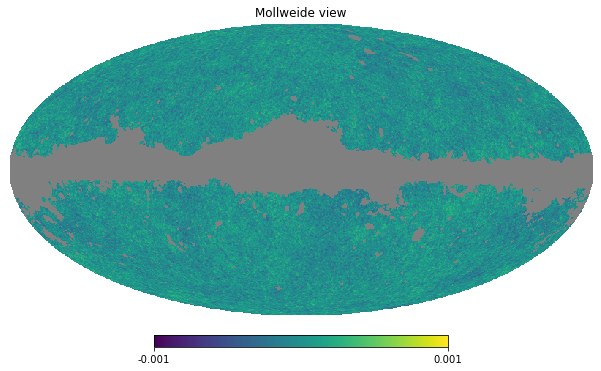
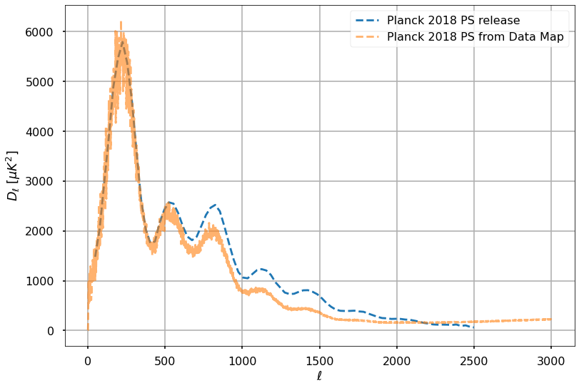
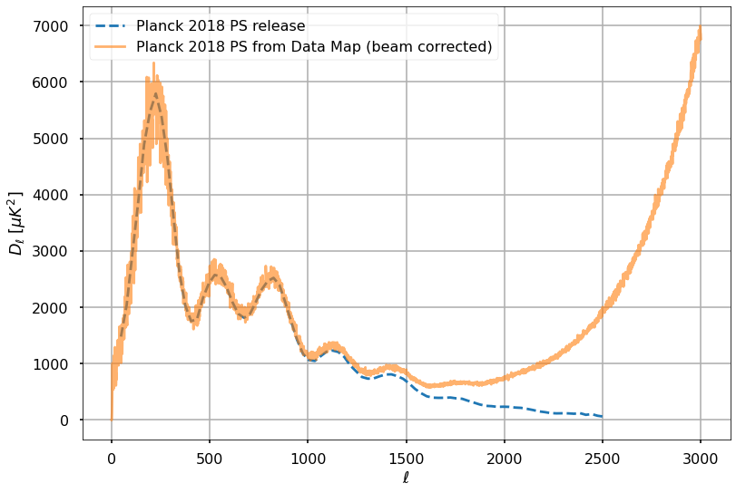

import healpy as hp
import numpy as np
import os
import astropy.units as u
import matplotlib.pyplot as plt
%matplotlib inlineIn this notebook we will load the Planck CMB-only temperature map and try to reproduce the Planck CMB power spectrum in temperature just using healpy.
Load data
First we load the Planck data release 3 CMB-only temperature produced by Commander by separating it out from galactic foregrounds:
!wget https://irsa.ipac.caltech.edu/data/Planck/release_3/all-sky-maps/maps/component-maps/cmb/COM_CMB_IQU-commander_2048_R3.00_full.fits--2021-02-28 09:59:21-- https://irsa.ipac.caltech.edu/data/Planck/release_3/all-sky-maps/maps/component-maps/cmb/COM_CMB_IQU-commander_2048_R3.00_full.fits
Resolving irsa.ipac.caltech.edu (irsa.ipac.caltech.edu)... 134.4.54.87
Connecting to irsa.ipac.caltech.edu (irsa.ipac.caltech.edu)|134.4.54.87|:443... connected.
HTTP request sent, awaiting response... 200 OK
Length: 1610660160 (1.5G) [image/x-fits]
Saving to: ‘COM_CMB_IQU-commander_2048_R3.00_full.fits’
COM_CMB_IQU-command 100%[===================>] 1.50G 43.1MB/s in 29s
2021-02-28 09:59:50 (53.4 MB/s) - ‘COM_CMB_IQU-commander_2048_R3.00_full.fits’ saved [1610660160/1610660160]
filename = 'COM_CMB_IQU-commander_2048_R3.00_full.fits'
cmb_map = hp.read_map(filename)/home/zonca/miniconda3/envs/so/lib/python3.7/site-packages/healpy/fitsfunc.py:369: UserWarning: If you are not specifying the input dtype and using the default np.float64 dtype of read_map(), please consider that it will change in a future version to None as to keep the same dtype of the input file: please explicitly set the dtype if it is important to you.
"If you are not specifying the input dtype and using the default "
/home/zonca/miniconda3/envs/so/lib/python3.7/site-packages/healpy/fitsfunc.py:391: UserWarning: NSIDE = 2048
warnings.warn("NSIDE = {0:d}".format(nside))
/home/zonca/miniconda3/envs/so/lib/python3.7/site-packages/healpy/fitsfunc.py:400: UserWarning: ORDERING = NESTED in fits file
warnings.warn("ORDERING = {0:s} in fits file".format(ordering))
/home/zonca/miniconda3/envs/so/lib/python3.7/site-packages/healpy/fitsfunc.py:426: UserWarning: No INDXSCHM keyword in header file : assume IMPLICIT
warnings.warn("No INDXSCHM keyword in header file : " "assume {}".format(schm))
/home/zonca/miniconda3/envs/so/lib/python3.7/site-packages/healpy/fitsfunc.py:428: UserWarning: INDXSCHM = IMPLICIT
warnings.warn("INDXSCHM = {0:s}".format(schm))
/home/zonca/miniconda3/envs/so/lib/python3.7/site-packages/healpy/fitsfunc.py:486: UserWarning: Ordering converted to RING
warnings.warn("Ordering converted to RING")!wget https://irsa.ipac.caltech.edu/data/Planck/release_3/ancillary-data/masks/COM_Mask_CMB-common-Mask-Int_2048_R3.00.fits--2021-02-28 09:59:53-- https://irsa.ipac.caltech.edu/data/Planck/release_3/ancillary-data/masks/COM_Mask_CMB-common-Mask-Int_2048_R3.00.fits
Resolving irsa.ipac.caltech.edu (irsa.ipac.caltech.edu)... 134.4.54.87
Connecting to irsa.ipac.caltech.edu (irsa.ipac.caltech.edu)|134.4.54.87|:443... connected.
HTTP request sent, awaiting response... 200 OK
Length: 201335040 (192M) [image/x-fits]
Saving to: ‘COM_Mask_CMB-common-Mask-Int_2048_R3.00.fits’
COM_Mask_CMB-common 100%[===================>] 192.01M 61.8MB/s in 3.1s
2021-02-28 09:59:57 (61.8 MB/s) - ‘COM_Mask_CMB-common-Mask-Int_2048_R3.00.fits’ saved [201335040/201335040]
hp.mollview(cmb_map, min=-1e-3, max=1e-3, title="CMB only temperature map", unit="K")/home/zonca/miniconda3/envs/so/lib/python3.7/site-packages/healpy/projaxes.py:920: MatplotlibDeprecationWarning: You are modifying the state of a globally registered colormap. In future versions, you will not be able to modify a registered colormap in-place. To remove this warning, you can make a copy of the colormap first. cmap = copy.copy(mpl.cm.get_cmap("viridis"))
newcm.set_over(newcm(1.0))
/home/zonca/miniconda3/envs/so/lib/python3.7/site-packages/healpy/projaxes.py:921: MatplotlibDeprecationWarning: You are modifying the state of a globally registered colormap. In future versions, you will not be able to modify a registered colormap in-place. To remove this warning, you can make a copy of the colormap first. cmap = copy.copy(mpl.cm.get_cmap("viridis"))
newcm.set_under(bgcolor)
/home/zonca/miniconda3/envs/so/lib/python3.7/site-packages/healpy/projaxes.py:922: MatplotlibDeprecationWarning: You are modifying the state of a globally registered colormap. In future versions, you will not be able to modify a registered colormap in-place. To remove this warning, you can make a copy of the colormap first. cmap = copy.copy(mpl.cm.get_cmap("viridis"))
newcm.set_bad(badcolor)
/home/zonca/miniconda3/envs/so/lib/python3.7/site-packages/healpy/projaxes.py:211: MatplotlibDeprecationWarning: Passing parameters norm and vmin/vmax simultaneously is deprecated since 3.3 and will become an error two minor releases later. Please pass vmin/vmax directly to the norm when creating it.
**kwds
We see there is residual galactic emission we should mask. The contamination just close to the galactic plane, so we could run anafast and specify a few degrees of gal_cut.
However, let’s exercise also how to use one of the Planck mask and use it to mask:
path = 'COM_Mask_CMB-common-Mask-Int_2048_R3.00.fits'
mask = hp.read_map(path)
map_masked = hp.ma(cmb_map)
map_masked.mask = np.logical_not(mask)hp.mollview(map_masked, min=-1e-3, max=1e-3)
Finally we load the binned TT CMB power spectrum that will be our target:
!wget https://irsa.ipac.caltech.edu/data/Planck/release_3/ancillary-data/cosmoparams/COM_PowerSpect_CMB-TT-binned_R3.01.txt--2021-02-28 10:00:04-- https://irsa.ipac.caltech.edu/data/Planck/release_3/ancillary-data/cosmoparams/COM_PowerSpect_CMB-TT-binned_R3.01.txt
Resolving irsa.ipac.caltech.edu (irsa.ipac.caltech.edu)... 134.4.54.87
Connecting to irsa.ipac.caltech.edu (irsa.ipac.caltech.edu)|134.4.54.87|:443... connected.
HTTP request sent, awaiting response... 200 OK
Length: 7143 (7.0K) [text/plain]
Saving to: ‘COM_PowerSpect_CMB-TT-binned_R3.01.txt.2’
COM_PowerSpect_CMB- 100%[===================>] 6.98K --.-KB/s in 0s
2021-02-28 10:00:04 (174 MB/s) - ‘COM_PowerSpect_CMB-TT-binned_R3.01.txt.2’ saved [7143/7143]
!head -3 COM_PowerSpect_CMB-TT-binned_R3.01.txt# l Dl -dDl +dDl BestFit
4.77112240e+01 1.47933552e+03 5.07654876e+01 5.07654876e+01 1.46111304e+03
7.64716065e+01 2.03496833e+03 5.47101576e+01 5.47101576e+01 2.06238073e+03cmb_binned_spectrum = np.loadtxt('COM_PowerSpect_CMB-TT-binned_R3.01.txt')Compute the power spectrum
- Always use
use_pixel_weights=Trueinanafastto have a more precise spectrum estimation - If you compute the spectrum on the partial sky, first order correction is to divide by the sky fraction to retrieve the spectrum over the full sky
lmax = 3000test_cls_meas_frommap = hp.anafast(map_masked, lmax=lmax, use_pixel_weights=True)ll = np.arange(lmax+1)sky_fraction = len(map_masked.compressed()) / len(map_masked)print(f"The map covers {sky_fraction:.1%} of the sky")The map covers 77.9% of the skyplt.style.use("seaborn-poster")k2muK = 1e6Power spectra are generally plotted as \(D_\ell\) which is defined as \(\dfrac{\ell(\ell+1)}{2 \pi}C_\ell\), so we need to apply that factor to the \(C_\ell\) calculated from the map.
plt.plot(cmb_binned_spectrum[:,0], cmb_binned_spectrum[:,1], '--', alpha=1, label='Planck 2018 PS release')
plt.plot(ll, ll*(ll+1.)*test_cls_meas_frommap*k2muK**2/2./np.pi / sky_fraction, '--', alpha=0.6, label='Planck 2018 PS from Data Map')
plt.xlabel(r'$\ell$')
plt.ylabel(r'$D_\ell~[\mu K^2]$')
plt.grid()
plt.legend(loc='best')<matplotlib.legend.Legend at 0x7f9bada43898>
Good, we can reproduce the first peak, but we see that power at small scales is suppressed due to the beam.
Correct for the beam
Reading the documentation of the Planck commander release we see that the output has a resolution of 5 arcminutes. Therefore as a first order correction of the beam, we can divide the power spectrum by the square of the beam window function.
w_ell = hp.gauss_beam((5*u.arcmin).to_value(u.radian), lmax=lmax)plt.plot(cmb_binned_spectrum[:,0], cmb_binned_spectrum[:,1], '--', alpha=1, label='Planck 2018 PS release')
plt.plot(ll, ll*(ll+1.)*test_cls_meas_frommap*k2muK**2/2./np.pi / sky_fraction / w_ell**2,
alpha=0.6, label='Planck 2018 PS from Data Map (beam corrected)')
plt.xlabel(r'$\ell$')
plt.ylabel(r'$D_\ell~[\mu K^2]$')
plt.grid()
plt.legend(loc='best');
Very good, we were also be able to reproduce the second and third peak, after \(\ell\) of about 1000, we start to overestimate the power spectrum.
This is as far as we can go with only healpy, the next step would be to properly handle the effect of masking. Computing the power spectrum on a masked map tends to create coupling between different scales, so power at large scales can contaminate the power spectrum at smaller scales. Next we can compute the power spectrum with a more sophisticated tool like NaMaster https://github.com/LSSTDESC/NaMaster which can correct for that.